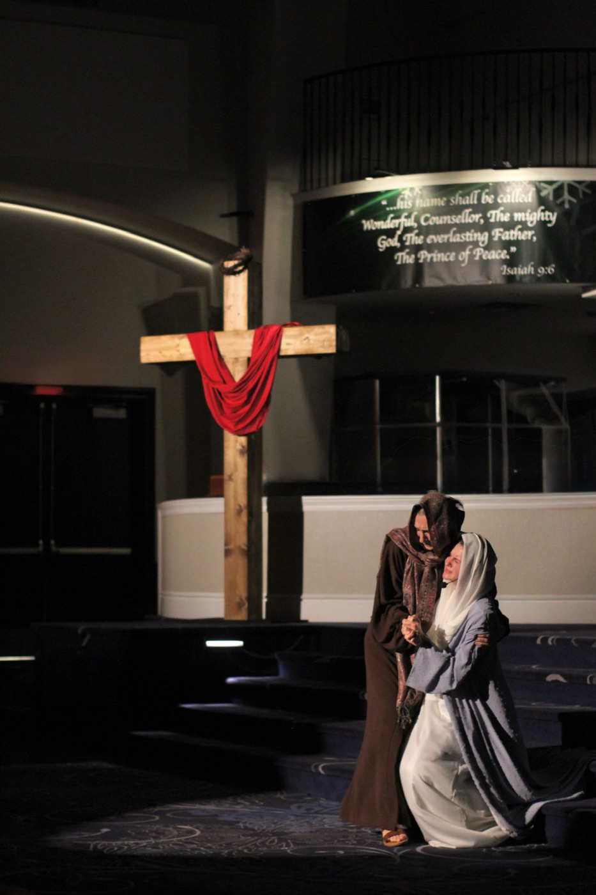
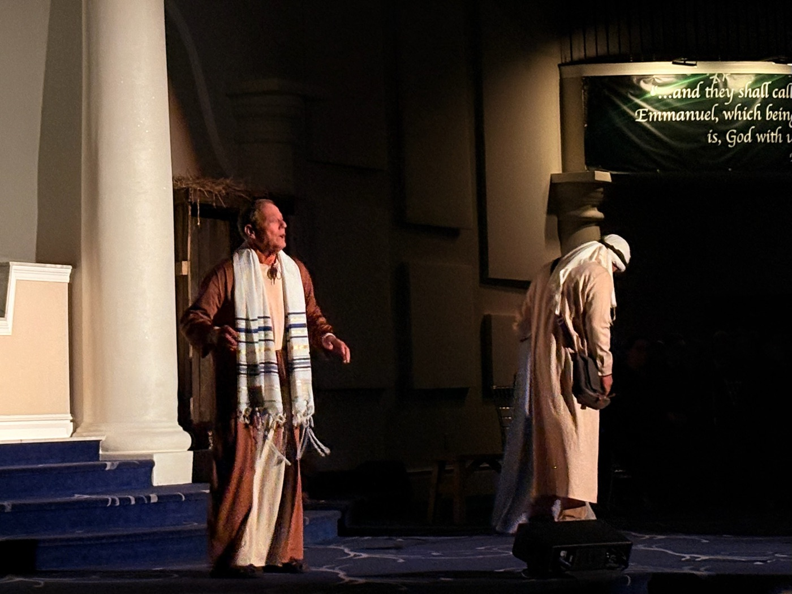
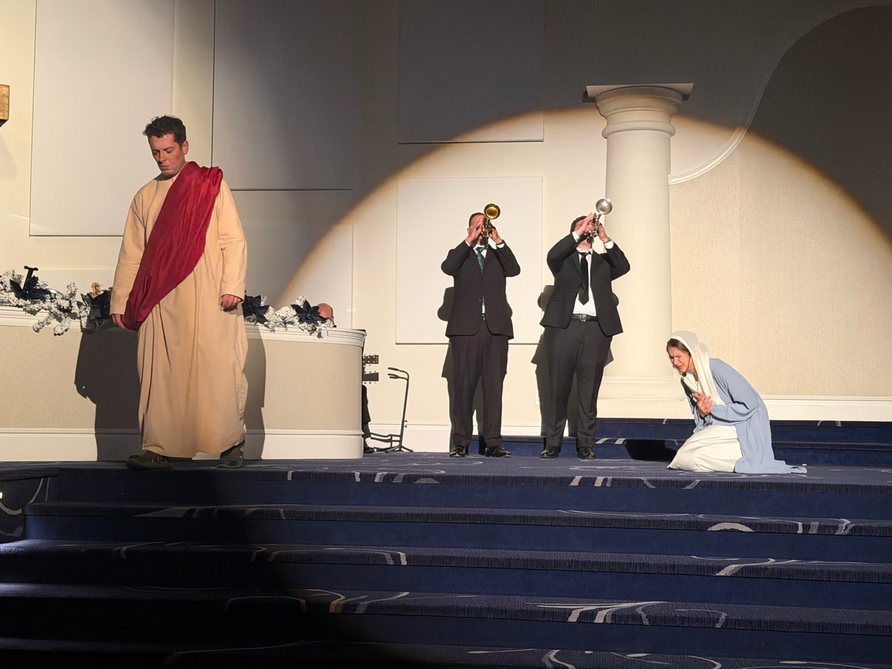

The Apostolic Church of Lafayette presents
The curtain rises in
counting down
About
An evening of sacred music and drama. Through song and scripture, Noel carries the story of the night God came near, performed by the choir, soloists, and musicians of the Apostolic Church of Lafayette.
The Word
“Behold, I bring you good tidings of great joy, which shall be to all people.”
“For unto us a child is born, unto us a son is given.”
“And the Word was made flesh, and dwelt among us.”
“They shall call his name Emmanuel, which being interpreted is, God with us.”
Cast & musicians
On stage



Contact us
Questions about seating, group seats, or anything else? The church office is glad to help.